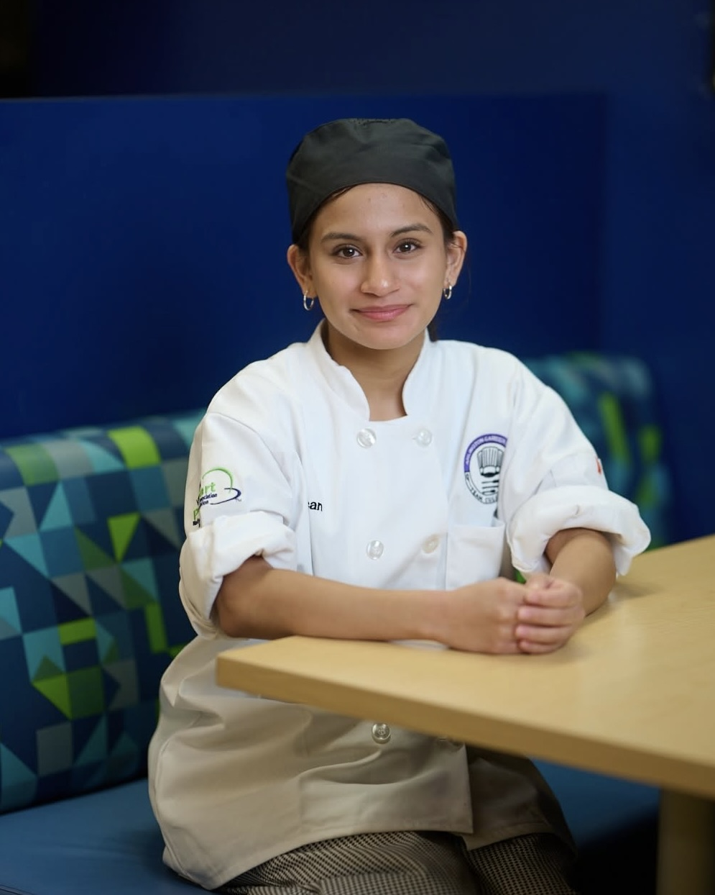

Hey, I'm Ximena! I am a junior at the Arlington Career Center. I have a strong interest in culinary arts, hospitality, and tourism. I began my journey in the culinary field out of pure curiosity and has now grown into genuine joy of learning new techniques and creativity in the kitchen.
In this portfolio, you can find some of my most recent projects at school as well as in my culinary class. My long term goal is to pursue a career in culinary arts and tourism, where I can continue learning more about the industry and eventually grow into a role that allows her to create memorable dining experiences for the public.
